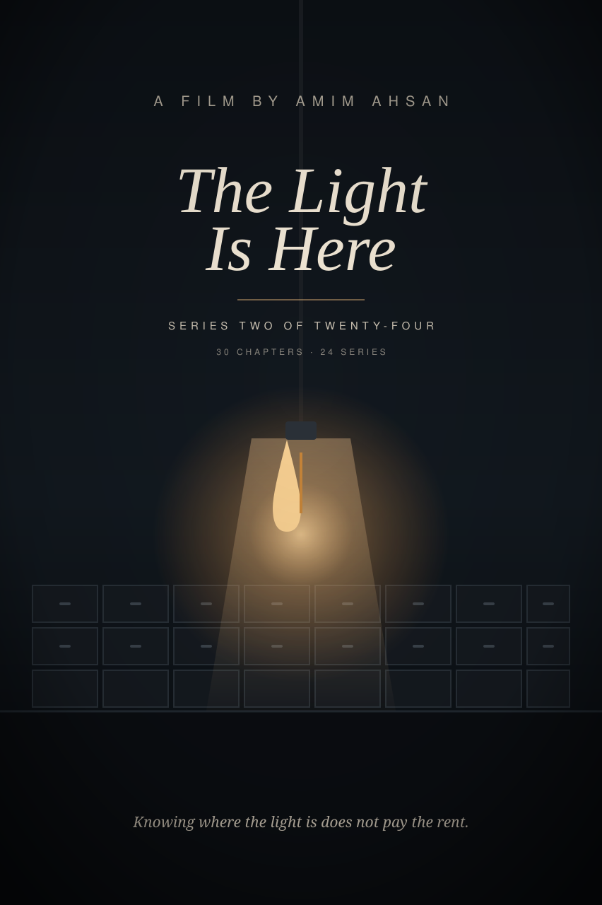

Leo
twenty, the clerk
Knows where the light is. Sell it to him or don't; he'll build it.

Series Two of Twenty-Four
Knowing where the light is does not pay the rent.
Leo is twenty, works the floor at Kessler Hardware, and can light a room out of its own stock. Then a real film crew comes to town and finds out how cheap he is.
Series two · autumn
Leo knows where the light is. He has known since he was nine, the way some people know which way is north. At Kessler Hardware he sells it by the bulb: sixty-watt, seventy-five, a daylight LED that lies about the sky.
Then a production called NIGHT MARKET rolls into town for eleven weeks with a generator, a permit problem, and a gaffer named Dutch who has three days to find someone who can source a hundred practicals locally. Leo is nineteen dollars an hour and already knows the stock.
The work is standing in a field at two in the morning, holding a diffusion frame in the rain, and being right about where the light should be.
What follows is thirty chapters of nearly no glamour: cable runs, colour temperature, a ladder that slides, a union letter, a store going quiet, and a boy being asked whether he is a hobby or a professional — by the two people who need him most, in the same week.
Twelve who are in it
twenty, the clerk
Knows where the light is. Sell it to him or don't; he'll build it.
sixty-three, the owner
Forty years of drawers. Talks about the store in the past tense and hates himself for it.
fifty-six, the gaffer
Runs a crew like a ferry captain. Has never once raised her voice and never once been ignored.
twenty-four, the best boy
Has paid his dues and would like the invoice acknowledged.
thirty-two, the DP
Exacting, kind in small doses, allergic to a bulb that isn't on the sheet.
Leo's mother
Night nurse. Measures everything in shifts and in what it costs.
eleven, the regular
Hangs around the lighting aisle after school. Asks the good question.
the producer
Two hundred thousand and a prayer. Says "favour" the way other people say "invoice".
the actress
Sixty-one, playing a market trader. Does her own crying and resents being asked twice.
the neighbour
Called the police on a film once. Would like to be asked this time.
the union rep
Explains the card like a doctor explaining a diagnosis: kindly, and without hope.
the other lead
Aisle nine, four hundred bulbs, and a back room nobody has swept since 1994.
Three parts · five chapters a page
Full screenplay · INT. / EXT.
Part One — The Aisle
Fluorescent light. Aisles of drawers. LEO, twenty, stands on a stepladder replacing a tube that has been flickering since March. SAM KESSLER, sixty-three, holds the ladder without being asked.
SAM
That one's been dying since March.
LEO
It's been dying since 1998. It just got loud about it this year.
He seats the tube. The hum stops. The aisle goes quiet in a way that feels like a held breath.
SAM
You know what it is about you? You hear it. Nobody hears it.
LEO
It's not a hearing thing.
A WOMAN in her forties sets a dead bulb on the counter like evidence.
WOMAN
It's the same one I bought last time.
LEO
It's not. Last time you bought warm white. This is daylight. Daylight in a living room makes everybody look like they're being interviewed.
WOMAN
I don't want to be interviewed in my own living room.
LEO
Then take the 2700. It's the same price and it will make your husband look ten years younger.
She laughs despite herself. Sam rings it up, watching Leo the way a man watches a horse he can no longer ride.
Part One — The Aisle
Four hundred bulbs. Leo walks the aisle with a clipboard, checking stock. TERRANCE, eleven, follows two paces behind, matching his steps.
TERRANCE
Why is this one on the top shelf?
LEO
Because it's the good one and I don't want to sell it.
TERRANCE
That's a bad business model.
LEO
It's a great business model. It's just a bad way to run a store.
Terrance picks up a bulb, holds it to the light, and looks at the filament like it might say something.
Leo hands Terrance a small card. On it, in pencil: 2200 / 2700 / 3200 / 4300 / 5600 / 6500.
LEO
That's the whole job. Every light you'll ever stand in is one of those numbers.
TERRANCE
Which one's the sun?
LEO
The sun isn't a number. The sun is a mood.
TERRANCE
(writing it down)
Sun. Mood.
Sam, at the end of the aisle, calls out without turning around.
SAM
Leo. You're teaching the inventory again.
LEO
I'm teaching the kid.
SAM
Same thing. Nothing in this store stays unless two people know where it is.
Part One — The Aisle
RAVI, thirty-eight, sets a folded call sheet on the counter. Rain on his coat. Leo reads it upside down without meaning to.
RAVI
I need a hundred practicals by Thursday. Tungsten. Nothing pretty. Lamps with shades, bare bulbs, anything that looks like it belongs in a kitchen somebody actually cooks in.
LEO
A hundred.
RAVI
A hundred.
LEO
You're shooting NIGHT MARKET.
Ravi stops. Recalculates the room.
RAVI
How do you know that?
LEO
Because you ordered two hundred feet of blackout and a case of gaffer tape in June, and nobody buys blackout in June.
Sam sits behind a desk with a ledger older than Leo. Ravi talks; Sam listens with his hands flat on the wood.
SAM
We're a hardware store.
RAVI
You're the only store within ninety miles that has a hundred bulbs in stock.
SAM
That's because I bought them in 2019 and nobody wanted them.
RAVI
I want them.
Sam looks at Leo, who is pretending very hard to be stacking invoices.
SAM
You want the boy too.
RAVI
I want whoever knows where they are.
Part One — The Aisle
A crew of twenty. A stall built from pallets. DUTCH, fifty-six, stands with her hands in her pockets, looking at a lamp that will not behave.
DUTCH
You're the hardware store.
LEO
I'm the hardware store's assistant.
DUTCH
Can you make that lamp stop doing that?
The lamp — a cheap shaded practical — strobes gently, like a heartbeat with a bad idea.
Leo crouches. Opens the shade. Looks at the socket. Takes a small brass screw out of his pocket, which he has clearly been carrying for years.
DUTCH
(watching)
Where did you get that?
LEO
Drawer nine. There's about eighty of them.
The lamp settles. Steady, warm, ordinary. The whole frame improves by one small degree.
DUTCH
Cat. Look at this.
CAT, thirty-two, the DP, looks through the monitor. Then at Leo. Then back at the monitor.
CAT
That's the shot. That's the whole street.
ADE
(from the cable run)
It's a bulb.
DUTCH
It's the bulb. There's a difference, and it's tonight's call time.
Leo stands, wipes his hands on his jeans, and does not know what to do with his face.
Part One — The Aisle
On the monitor: the actress, JO, sixty-one, sits at a stall under a lamp. Half her face is orange. The other half is green.
CAT
She looks like a traffic light.
ADE
The street lamp is sodium. We can't move the street.
LEO
You don't move the street. You put a gel on your practical and you stop pretending the sodium isn't there.
Silence. Ade turns slowly.
ADE
Who's the day player again?
DUTCH
He's the day player who's right. Get the half-blue.
Leo holds a gel in front of the practical. Cat watches the monitor. The orange and green become one warm, believable night.
JO
(from the stall, not moving)
Now I look like a woman who sells fish. Thank you.
CAT
Dutch. Keep him.
DUTCH
He's got a job.
CAT
Then buy him out of it.
Ade walks past with a coil of cable and says, quietly, not quite to Leo:
ADE
Two years I've been doing this. Two years.
Part One — The Aisle
The generator coughs. Stops. Every light dies at once, and the street becomes the street again.
RAVI
(in the dark)
Tell me that's somebody's phone.
DUTCH
That's the genny. Ade. Fuel?
ADE
Fuel's fine. It's the regulator. It's been hunting all night.
Leo is already walking. Not running. Walking, the way you walk when you know exactly where the thing is.
Torchlight. Leo opens the panel. Looks. Closes it. Looks at Dutch.
LEO
It's not broken. It's cold and it's got bad fuel in it and the filter's half full of water.
ADE
We can't get a filter at three in the morning.
LEO
We can get a filter at three in the morning if somebody knows a store with a back door and an owner who doesn't sleep.
He is already on the phone. It rings four times.
SAM
(over phone)
It's three in the morning and you're calling me from a field.
LEO
Drawer eleven. The small inline filter. And the spare key's still under the paint can.
SAM
(a long pause)
...I'll meet you there. Don't touch the till.
The generator starts at 3:52. The street comes back on like a held breath let go.
Part One — The Aisle
NADIA, fifty, sets a laminated card on the table between them. Leo reads it twice.
NADIA
Three hundred and forty days. That's the apprenticeship. Then the exam. Then, if the local has room, the card.
LEO
I've been doing this for six weeks.
NADIA
You've been doing this for six weeks on a non-union show that's paying you under the rate and calling it a day rate.
DUTCH
Nadia.
NADIA
I'm not here to take the job away from him. I'm here to tell him what the job is.
Nadia gone. Leo still holding the card. Dutch sits down opposite him and takes her sunglasses off for the first time.
DUTCH
Here's what nobody tells you. The card is not a compliment. It's a port.
LEO
A port?
DUTCH
Somewhere to dock when the weather turns. You can learn everything in the world about light and still lose a job because the show has to hire from the list. That's what the card is for. Not for the good days.
LEO
And the store?
DUTCH
The store is not a port. The store is a harbour. It's shallower, but it's yours.
Leo folds the card into his back pocket, which is the first decision he makes in the series.
Part One — The Aisle
A rigging job for tomorrow's scene. Leo climbs the ladder to hang a frame. Ade watches from the floor with his arms folded.
ADE
Clip in.
LEO
It's two feet.
ADE
It's twenty-two feet, and it's two feet from the top. Clip in.
Leo clips in. Or half clips in — the carabiner goes through the loop but not the ring. From the floor it looks the same.
The ladder's bent foot slides. The frame comes down. Leo comes down with it, four feet, and lands badly on his side.
Sound: aluminium, a breath, then nothing. Ade is there in under a second.
ADE
Don't move. Leo. Don't move.
LEO
(on the floor, winded)
The frame. Is the frame bent?
ADE
You're asking about the frame.
LEO
It's a rental.
Ade laughs once, horribly, and then puts his jacket under Leo's head.
Ade sits with a paper cup. Dutch stands. Leo's wrist is wrapped. Nothing is broken except the week.
DUTCH
Two weeks off the ladder. You'll do the board. You'll do the paperwork. You'll learn what a permit costs.
LEO
That's not lighting.
DUTCH
That's exactly lighting. Half of lighting is knowing what the job is allowed to be.
Part One — The Aisle
Leo mops one-handed. Sam does the till with the slow competence of a man who has done it eleven thousand times.
SAM
You were on a ladder.
LEO
I was clipped in.
SAM
You were clipped in the way people are clipped in when they've decided nothing can happen to them.
Leo says nothing. Sam closes the drawer.
SAM
Six to two. That's your shift. You want to do the nights, that's your business. But at six you're here, and at two you're gone, and in between you're not a film person, you're a clerk.
A customer asks Leo a question about a door handle. Leo answers it perfectly. Then stares at the bulbs.
CUSTOMER
Are you all right, son?
LEO
I'm great. It's a good handle. It'll outlive us both.
The customer leaves, confused but satisfied. Leo stands alone in the aisle, and the fluorescent hum comes back.
Part One — The Aisle
Sam counts the till. Leo stands with his hands at his sides. A box sits on the counter between them.
SAM
The show called. They want you full time until wrap.
LEO
I know.
SAM
They offered to pay the store for the hours. Which is a polite way of saying they know I can't say no.
LEO
You can say no.
SAM
I can. I'm not going to.
He sets the box of bulbs on the counter and pushes it over.
SAM
Take these. Not for the show. For you. A hundred bulbs is a hundred bulbs, and one day you'll be somewhere with no store and you'll want to know what you've got.
Leo carries the box to his car. Sam locks the door, and through the glass, the store is dark except for aisle nine, where a single tube stays on.
LEO
You've got one on.
SAM
I know.
LEO
Since when?
SAM
Since March. I like knowing where the aisle is.
Part Two — Night Market
The camera points at a tree that does not exist in the story. Cat wants the horizon darker. Dutch wants the tree to read.
CAT
The sky's too bright. It's supposed to be three hours before dawn.
DUTCH
Then we flag the sky.
CAT
With what? We've got two 12x12s and a field.
Leo looks at the field. Then at the crew's vehicles. Then at the equipment truck.
LEO
We've got four trucks and a tarp the size of a tennis court.
DUTCH
(after a beat)
Say that again, slower.
Trucks parked in a line. Black tarp strung between them, twenty feet up, blocking the village lights. The horizon goes dark like a curtain coming down.
CAT
(at the monitor)
Oh, that's evil. That's beautiful.
ADE
That's a tarp.
DUTCH
That's eleven thousand dollars of night, is what that is. Ade. Log it as a grip day.
Leo, alone at the edge of the field, looks at the dark horizon he made and grins like a kid.
Part Two — Night Market
Leo builds a moon box out of a pallet, a storm window, four bulbs from the box Sam gave him, and a dimmer switch from drawer nine.
TERRANCE
That's a window.
LEO
That's a soft source. The window is just the delivery system.
TERRANCE
Why not just use the moon?
LEO
Because the moon doesn't take direction, and the moon is four hundred thousand kilometres away, and I've got a shoot on Thursday.
He switches it on. Cold, even, unearthly light fills the barn. Terrance's face changes.
Leo sits on an upturned crate, eating a sandwich. Terrance sits opposite, holding the dimmer like it's a phone.
TERRANCE
Are you going to be in movies?
LEO
I'm going to be the reason you can see the movies.
TERRANCE
That's not the same thing.
LEO
(chewing)
No. It's not.
A long pause. The moon box hums.
TERRANCE
Can I come Thursday?
LEO
You're eleven.
TERRANCE
I'm twelve on Thursday.
Part Two — Night Market
Rain. Not film rain. Weather. The crew moves like a single animal. Leo is on the lights.
DUTCH
Kill the heads. Everything above knee height, kill it.
ADE
We lose the shot.
DUTCH
We lose the crew, we lose the film. Kill them.
Leo is already unplugging. He stops at the third head, looks at the cable run, and sees what nobody else has.
LEO
The run's in a puddle. It's been in a puddle since the first take.
Leo lifts the cable and loops it over a stall rail, then a second rail, then a third, making a dry path that reads, from a distance, like decoration.
CAT
Dutch. Look at the dressing.
DUTCH
He's not dressing. He's draining.
CAT
It's the best-dressed street we've had all week.
Rain on the plastic. A whole street of small lights reflected twice. The shot is better in the rain and everyone knows it.
DUTCH
(to Leo, quietly)
That's the job. Not the light. The water getting to the light.
Part Two — Night Market
THE FIRE MARSHAL, fifty, walks the set with a clipboard. Ravi walks beside him, a half-step behind, like a man following a doctor.
MARSHAL
This stall is in front of an exit.
RAVI
It's a prop stall. It's not real.
MARSHAL
The door's real. The people are real. The stall's the only thing here that isn't, and it's the one thing stopping them.
Ravi looks around for help. Dutch is not going to help. Leo, holding a coil of cable, is.
LEO
If we move it four feet, it still reads as a stall and the exit clears.
The stall, moved. The marshal measures the gap with his arm. Nods. Writes.
MARSHAL
Who are you?
LEO
Lighting.
MARSHAL
Lighting doesn't usually know about exits.
LEO
Lighting is the only department that has to be able to leave in a hurry.
The marshal laughs once and hands Ravi the form. Ravi looks at Leo with an expression that is one-third gratitude and two-thirds arithmetic.
RAVI
(quietly)
You just saved me four thousand dollars.
LEO
I moved a stall.
RAVI
That's what saving four thousand dollars looks like.
Part Two — Night Market
Ade is inventorying. Leo climbs in. The truck is too small for the conversation.
DUTCH
(from outside)
Ade. Leo's best boy from tomorrow. Show him the board.
Ade stops. Puts down the pen. Does not turn around.
ADE
I've been best boy on this show since prep.
DUTCH
You've been best boy since prep. Now you're gaffer's second, and he's best boy, and next week you're both going to be too busy to be this upset about it.
ADE
That's not a promotion.
DUTCH
No. It's a demotion with a raise. Welcome to the industry.
Dutch gone. Ade turns around at last.
ADE
You know what I did for two years? Coffee. Cable. Driving. And every time I put a light somewhere, someone moved it.
LEO
I know.
ADE
You don't. You walked in with a screw in your pocket and a store full of bulbs and everybody acted like the lights came on for the first time.
Leo considers this honestly, which is worse than arguing.
LEO
You want the board?
ADE
(a beat)
No. I want the board to be right.
He hands Leo the pen.
Part Two — Night Market
Jo sits. The camera is a foot from her face. She has done the scene twice and it has been good both times and nobody has been moved.
CAT
(quietly, to Dutch)
She's doing the crying. She's not feeling the crying.
DUTCH
Then it's a light problem.
CAT
It's an acting problem.
DUTCH
Everything's a light problem until it isn't.
Leo, kneeling by the practical, looks at Jo's eyes. Then at the source. Then he does something nobody asked for: he dims the practical by a third.
The frame darkens. Jo's face is now mostly shadow with two bright points in it.
JO
...and I told him the price and he looked at me like I'd made the fish myself.
She stops. Her eyes go. Not a performance — a leak.
CAT
(barely audible)
Rolling.
After the cut, Jo sits still for a moment. Then looks off-frame at Leo.
JO
What did you do?
LEO
I made it harder to see. You did the rest.
JO
Don't do that again without telling me.
LEO
I won't.
JO
(standing, patting his arm)
Do it again tomorrow.
Part Two — Night Market
The town goes dark. Not the set — the set runs on a generator. Everything around it: houses, streetlamps, the 7-Eleven, gone.
RAVI
How long?
DUTCH
Substation. Four hours, maybe six.
RAVI
Then we're the only light in town and every neighbour within a mile is going to come and look at it.
Beat. Cat and Dutch look at each other.
CAT
...That's the shot.
Neighbours arrive in coats, holding torches and children. They stand at the edge of the set, watching, faces lit by the film.
DUTCH
(to Leo)
You've got twenty minutes to make them look like a crowd and not a complaint.
LEO
Then give me the warm ones. All of them. And kill the cold fill.
Leo pulls the last four bulbs from the box Sam gave him, screws them into clamp lights, and hands them to neighbours like lanterns.
LEO
(to a woman with a pram)
Hold this at chest height and don't look at the lens.
WOMAN
What is it?
LEO
It's the light. You're the light.
Wide: forty people holding warm bulbs in the dark, the market lit from inside the crowd. The best frame of the film, made for free.
Part Two — Night Market
MR. PETROSKY, seventy-one, stands at his gate. He is not shouting. That's what makes it serious.
PETROSKY
This is the eleventh night.
DUTCH
Twelfth. The eleventh was Thursday.
PETROSKY
I'm not calling anybody. I did that once, on another film, in 1997, and I've regretted it for twenty-nine years.
DUTCH
Then why are you standing in your dressing gown?
PETROSKY
Because nobody has ever asked me whether it was all right.
Three mugs of tea on the birdbath. Leo, Dutch and Petrosky, sitting on garden furniture at two in the morning.
PETROSKY
My wife was an extra in a film in 1974. She's dead now. I've still got the call sheet.
LEO
Does it have her name on it?
PETROSKY
It has "WOMAN AT BUS STOP." She was thrilled. She was twenty-six.
Dutch looks at Leo. Leo looks at the permit in the recycling bin and goes to fetch it.
LEO
We shoot here again Thursday. Do you want to be in it?
PETROSKY
(a long pause)
...As what?
LEO
Man at a window. Looking out. Being annoyed at a market that isn't there.
PETROSKY
That I can do.
Part Two — Night Market
Sixty people, a folding table, a cake with a drawing of a lamp on it. Ravi stands on a pallet with a bottle.
RAVI
Eleven weeks. Four hundred and six set-ups. One rewrite in a car park. Thank you. That's the speech.
Cheers. Leo stands at the edge, holding a plate he isn't eating from.
DUTCH
(appearing beside him)
You're not drinking.
LEO
I'm working tomorrow.
DUTCH
The show wrapped.
LEO
The store didn't.
The wrap gift: a cooler bag with the show's logo, a multi-tool, and an envelope. Leo opens the envelope. Inside, a crew list. His name, halfway down, under ELECTRIC.
LEO
(reading)
"Leo Okafor. Electric."
ADE
(passing, not stopping)
It's not a credit. It's a certificate.
LEO
For what?
ADE
For being on it.
Leo folds the crew list and puts it in his back pocket, next to the union card.
Part Two — Night Market
Dutch is writing in a notebook. Leo stands. She does not look up.
DUTCH
Next show is in March. Six months, three states, good rate. I need a best boy who can run a truck and doesn't panic.
LEO
That's a job offer.
DUTCH
It's a job offer.
LEO
I'm twenty.
DUTCH
I was nineteen when I did my first show. I slept in the truck. It's not a reason.
Car park. Dutch smokes. Leo doesn't.
DUTCH
Here's the thing nobody tells you at twenty. If you go, you'll be good. You'll be very good in about four years. And you'll come back here at thirty and the store will be a phone repair shop and you'll feel nothing, which will frighten you.
LEO
And if I stay?
DUTCH
If you stay, you'll be the best lighting man in a hundred miles and there'll be nobody to tell.
LEO
That's not an answer.
DUTCH
No. It's a decision. Those don't come with answers, they come with a date.
She hands him the notebook page. March 3rd. A phone number. He does not put it in his pocket. He holds it.
Part Three — The Aisle Again
Leo turns the lights on bank by bank. Sam watches from the door with two coffees.
SAM
You're early.
LEO
You're earlier.
SAM
I'm the owner. I'm allowed to be sentimental about a building.
He hands Leo a coffee. They stand in aisle nine.
SAM
So. What did it feel like?
LEO
Like being useful for eleven weeks and then stopping.
SAM
That's every job, son. That's why they call it work and not weather.
A customer comes in at 6:02. Leo straightens, smiles, and is instantly, completely a clerk.
CUSTOMER
Do you have anything that makes a room feel bigger?
LEO
(without hesitation)
Aisle nine. Two lamps on opposite walls, both warm, neither in the middle. The middle's what makes a room small.
Sam, at the counter, hides a smile in his coffee.
Part Three — The Aisle Again
Terrance, twelve now, sits on the step stool with the notebook. Leo is restocking.
TERRANCE
I wrote down what you said. About the numbers.
LEO
Read it back.
TERRANCE
"Every light is one of six numbers except the sun which is a mood."
LEO
That's right.
TERRANCE
That's not science.
LEO
No. It's the part before the science.
Leo shows him the back room: a workbench, a set of clamp lights, and the moon box from the barn, still standing.
LEO
This is the shop. Not the store. The shop.
TERRANCE
Does Sam know?
LEO
Sam gave me the bulbs.
TERRANCE
That's not the same as knowing.
Leo looks at the moon box, then at the door to the shop floor, and understands something unwelcome.
Part Three — The Aisle Again
An accountant walks the aisles with a tablet. Sam follows. Leo watches from the counter.
ACCOUNTANT
Your stock value is down eleven percent and your foot traffic is down thirty-one.
SAM
There's a big box store forty minutes away.
ACCOUNTANT
There's a big box store eleven minutes away. It opened in August.
Sam says nothing. Leo does the arithmetic in his head and hates the answer.
Sam at the desk. Leo in the doorway. The ledger open between them.
LEO
How long?
SAM
Eighteen months. Maybe twenty if I stop paying myself, which I stopped doing in April, so.
LEO
You didn't tell me.
SAM
You were on a ladder in a field. What were you going to do, come back and sell hammers?
LEO
Maybe.
SAM
(a long look)
Don't say maybe to a man with eighteen months. Say it to the bank.
Part Three — The Aisle Again
An envelope from the union. Leo opens it with a knife, carefully, the way his mother opens bills.
MONA
(entering)
Is that the letter?
LEO
It's the letter.
He reads. Mona watches his face, which is the only part of him that gives anything away.
MONA
Well?
LEO
"We regret to inform you that the apprenticeship intake for the coming year has been filled."
MONA
Filled.
LEO
Filled.
Mona sits down opposite. Takes the letter. Reads it properly, twice.
MONA
"Apply again next cycle."
LEO
Next cycle's a year.
MONA
Then you'll be twenty-one and you'll know more than the people who got in.
LEO
That's a nurse's answer.
MONA
That's everybody's answer. It's just that nurses say it at three in the morning, when it's true.
She takes his hand briefly, then goes to the fridge and starts making something to eat, because this family fixes things by feeding them.
Part Three — The Aisle Again
Sam opens drawers and does not close them. Screws. Washers. A brass hinge. Eighty small inline filters. A drawer of keys to nothing.
SAM
My father lettered these in 1961. He had a system. Nothing alphabetical. Everything by what it's for.
LEO
And the empty one?
SAM
That was "MISC." I took the label off in 1994 because I got tired of not knowing.
He closes the empty drawer.
SAM
The building's sold. End of February. They're putting in a phone repair shop and a nail bar.
Leo stands in front of the wall. Sam sits on an upturned crate.
LEO
What happens to the drawers?
SAM
Skip. Unless somebody wants a hundred and eight drawers.
LEO
I want a hundred and eight drawers.
Sam looks up. Something moves behind his face that he does not allow to arrive.
SAM
What for?
LEO
I don't know yet. I just know I want them.
Part Three — The Aisle Again
MAYA, twenty-one, sets a notebook on the counter. It's the same notebook. The cover has been taped.
MAYA
I need a gaffer.
LEO
You need a store that sells lights.
MAYA
I need both and I've got two hundred dollars and a church basement.
They look at each other. Two years of not saying it.
LEO
How's the word?
MAYA
Still mine. Yours?
LEO
Still a word.
Maya walks the aisle. Half the bins are empty. She picks up a bulb, holds it to the light, exactly like Terrance did.
MAYA
They offered me a real budget. Twelve thousand. From the festival thing.
LEO
That's not a real budget.
MAYA
It's twelve thousand more than the last one. I'd pay you. Properly. Not much, but properly.
LEO
When?
MAYA
March.
A beat. March. The notebook page with the phone number is still in his wallet.
MAYA
What?
LEO
Nothing. March is a busy month.
Part Three — The Aisle Again
THE MANAGER, forty, has Leo's application on the desk. Leo's hands are flat on his knees.
MANAGER
You've got six years of retail and eleven weeks of film. Where do you see yourself in five years?
LEO
Running a lighting department.
MANAGER
We have a lighting department.
LEO
I know. That's why I'm here.
MANAGER
(writing)
Good. Starting rate is fifteen twenty an hour, thirty-two hours, no nights.
Leo stands in the car park. The building behind him is enormous and lit like an aquarium. He does not go back in.
LEO
(to himself, quietly)
No nights.
He takes out his phone. The union letter is folded in his wallet. The notebook page is folded behind it. He looks at both.
Then he puts the phone away and walks to his car, past forty carts, under a light that is the wrong colour.
Part Three — The Aisle Again
Three papers on the table. Leo has arranged them in a row, which is his version of panic.
MONA
The car's four hundred. The bill's eleven hundred after insurance. I'm not asking you for it.
LEO
I know.
MONA
I'm telling you because you're twenty and you keep doing arithmetic in your head like it's a secret.
Leo turns the calculator around. The number is not good.
LEO
March is six thousand. Six months, three states. I'd be gone.
MONA
And?
LEO
And Sam's building sells in February.
MONA
Sam is sixty-three and has a pension and a sister in Florida. You're twenty.
Mona finally sits. Takes the bill. Folds it. Puts it in her bag.
MONA
I worked nights for eleven years so you could have a choice. Not so you could spend it on me.
LEO
What if the choice is staying?
MONA
Then it had better be a real plan and not a feeling with a light on it.
She kisses the top of his head on her way out to a shift.
Part Three — The Aisle Again
The shelves are gone. The drawer wall remains, a hundred and eight empty boxes. One bulb burns on a stand.
SAM
You've got until the end of the month and then the keys go back.
LEO
I want the back room. Six hundred a month, and I'll take the drawers and the bulbs and the insurance in my name.
SAM
Six hundred is a favour. I don't do favours. I do rent.
LEO
Then eight hundred and I fix the roof.
Sam laughs — the first real one in the series — and puts out his hand.
Leo alone. He calls Dutch. It rings twice.
DUTCH
(over phone)
You're calling about March.
LEO
I'm calling about March. I'm not coming.
A long silence on the line. Then, not unkindly:
DUTCH
Say why. Not for me. Say it out loud so you can hear it.
LEO
Because the light is here. Everybody else can rent it from somewhere. Here, it's mine, and it's a hundred and eight drawers, and there's a kid who comes in after school.
DUTCH
(a pause)
...Then put your name on the door, and answer the phone, and don't be cheap with the cable.
She hangs up first, which is a kindness.
Part Three — The Aisle Again
A plywood sign over the door. Hand-painted: AISLE NINE — LIGHTING, RENTAL, REPAIR. Under it, smaller: IF WE DON'T HAVE IT, WE'LL BUILD IT.
Eleven people in a room built for four. Sam cuts a ribbon that is actually a length of gaffer tape. Applause.
SAM
(to Leo, over the noise)
You lettered the drawers yourself.
LEO
I used your father's system. By what it's for.
SAM
And MISC?
LEO
I filled it. It's spare lamps and a bottle of water. You never know.
Maya at the counter with a rental sheet. Terrance behind it with a clipboard, taking it very seriously.
MAYA
Two moon boxes, four practicals, one generator, and a gaffer for eleven days.
TERRANCE
(checking the sheet)
The gaffer's expensive.
MAYA
I know. I've met him.
Leo comes out of the back with a coil of cable over his shoulder, sees Maya, and grins.
LEO
March?
MAYA
March.
The shop is closed. Leo turns off the bulbs one bank at a time, and leaves one on — the one over the drawer wall.
Through the window: a boy on a bike, a shop with a light in it, and a street going blue.
TERRANCE
(from the doorway)
You leaving that on?
LEO
Yeah.
TERRANCE
Why?
LEO
So people know where we are.
He locks the door. Walks home. The light stays on behind him, all the way down the street.